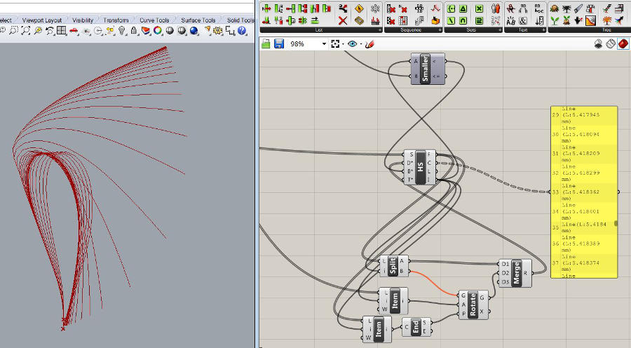
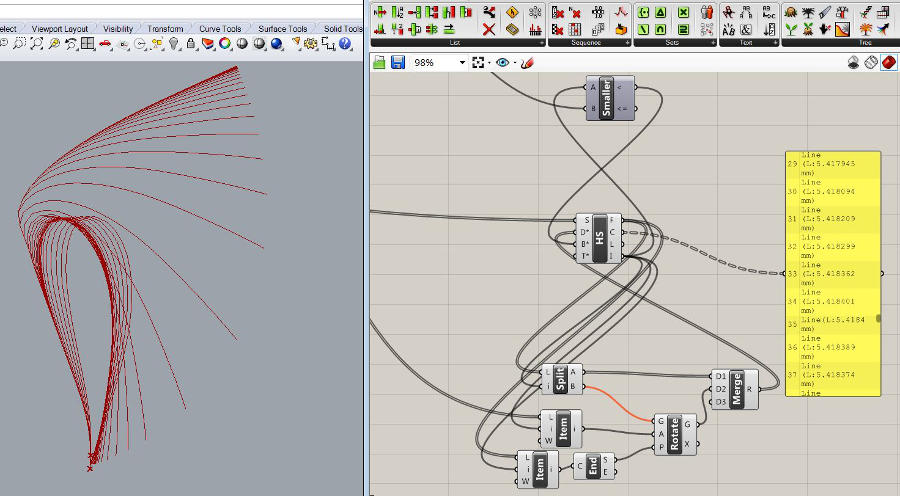
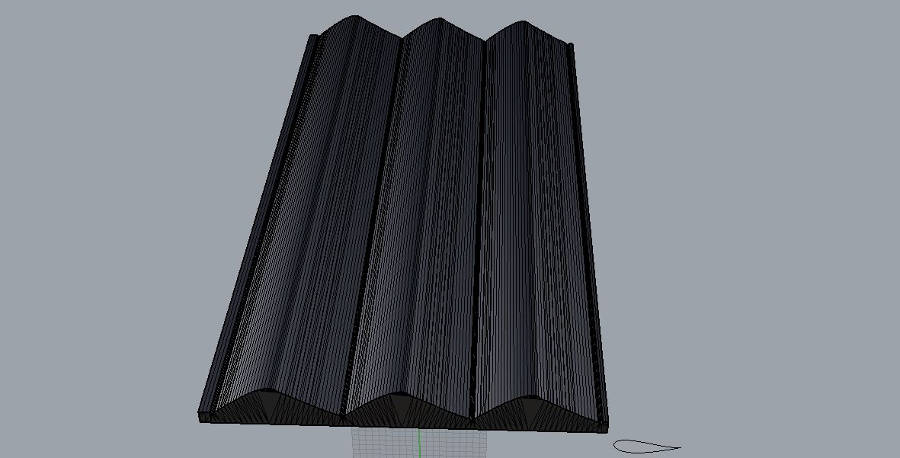
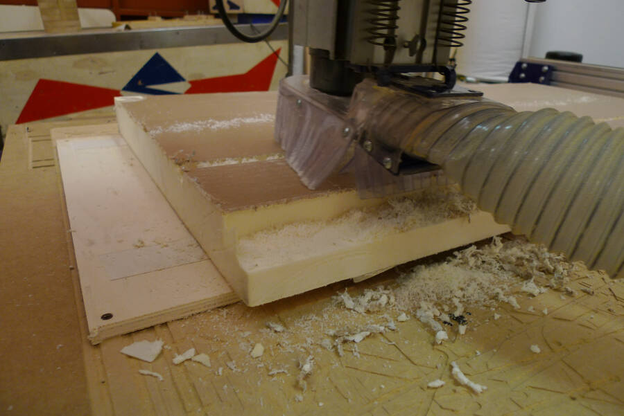
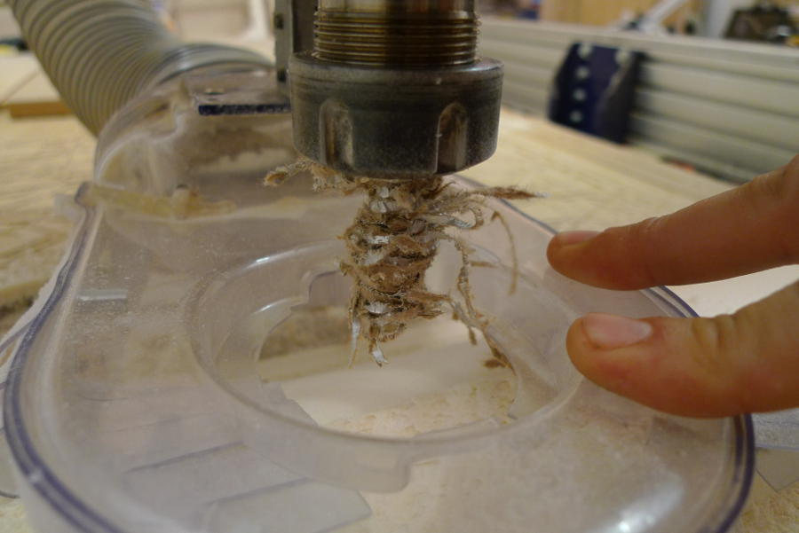
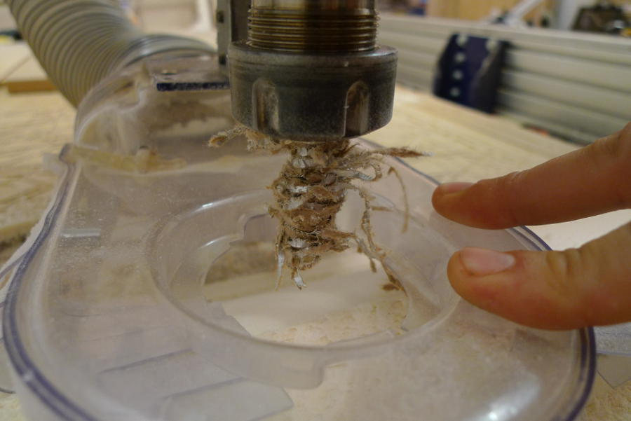
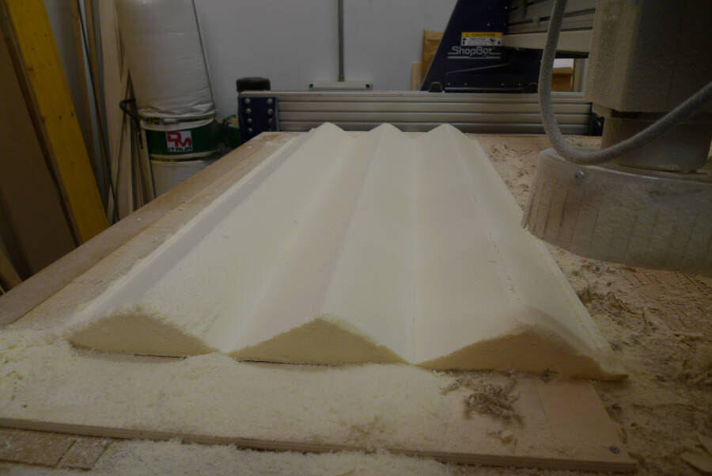
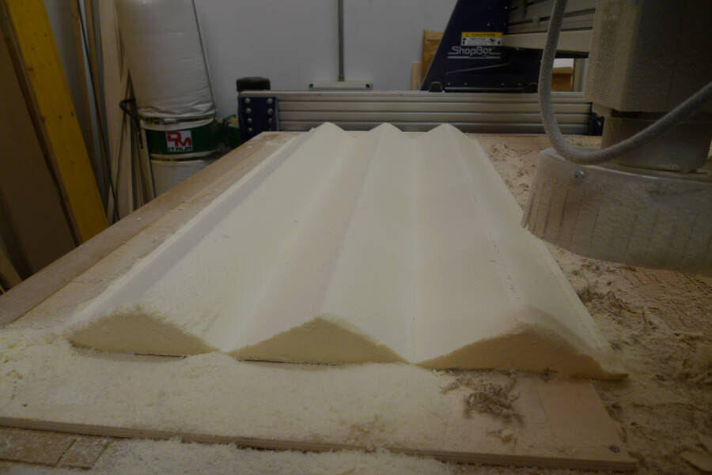
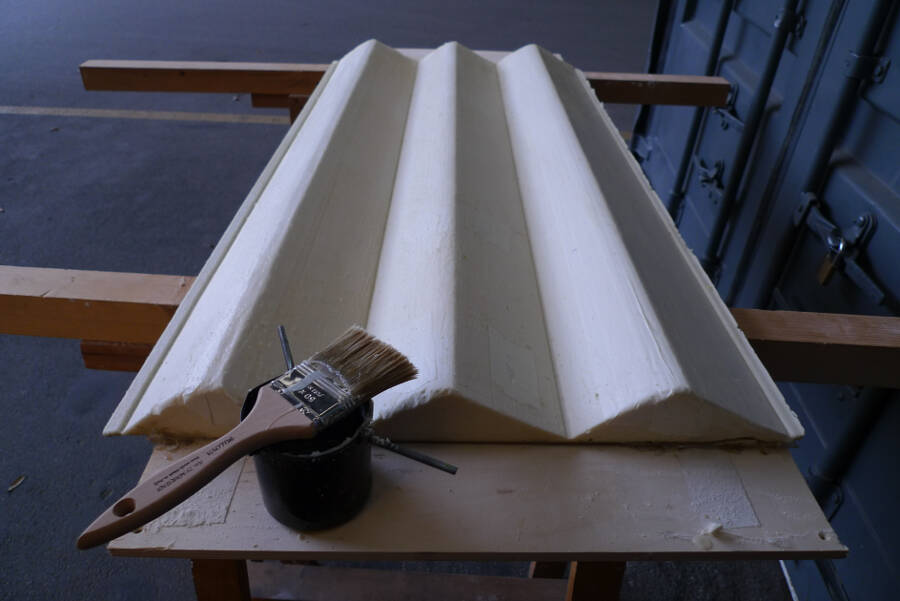

12. Composites
Project
To test the resistence and the flexibility od the composite, I decided to make a low-cost Darrieus wind turbine. A Darrieus is a vertical axis wind turbine, pretty simple and robust, it's less sensitive to design mistake than horizontal axis wint turbines, and that's why it's more appropriate to be produced with a minimum budget.
Instead of carve the blade profile and cover it with fibers and resin, I want to make a reusable mold without divide the blade. I used this reference for the profile:
 Now the problem was to unroll it without bend too much some parts. To do it I made a small Grasshopper sketch, that analize the curvature of a certain number of point on the curve and reduce it proportionally.

Here the grasshopper file
Now the problem was to unroll it without bend too much some parts. To do it I made a small Grasshopper sketch, that analize the curvature of a certain number of point on the curve and reduce it proportionally.

Here the grasshopper file
From the unfolded curve I did the 3D model of the mold.

Here the *.stl file
Milling
I used a very basic polyurethane, milled with the Shopbot. To speed up the process i used a very simple roughing with a depth of 0.5 inches.

I attached the foam to a plywood panel to keep it standing still, but it ended up that the double side tape wasn't strong enough. After a while the corner start to detach. as a consequence the cnc left a cut where it wasn't suppose to be.
 I used some hot glue on the corner to be able to go on without problems.
I used some hot glue on the corner to be able to go on without problems.
When I started the finishing, I noticed that the head of the spindle was going to hit the foam because of the too quick roughing. To avoind it, I paused the machine and cut the extra material with a cutter.
 The top layer of this insulation polyurethane foam is a double layer sheet made out of paper and aluminium. After a while I stopped the machine because of a wierd noise and i checked the end mill: the aluminium was covering the tip, making it uncapable of cutting.

During the finishing the vacuum tube was too close to the piece and sometimes it touched the foam. Being a very soft material that was enough to ruin the surface
The top layer of this insulation polyurethane foam is a double layer sheet made out of paper and aluminium. After a while I stopped the machine because of a wierd noise and i checked the end mill: the aluminium was covering the tip, making it uncapable of cutting.

During the finishing the vacuum tube was too close to the piece and sometimes it touched the foam. Being a very soft material that was enough to ruin the surface
 Use some tape to pull up the tube was enough to go on with the finishing without any further trouble. The final result was pretty nice

Use some tape to pull up the tube was enough to go on with the finishing without any further trouble. The final result was pretty nice

Coating the mold
Folloging the same idea of using very cheap materials that could last for few uses, I decided to coat the mold with hot wax. To don't burn it while you melt it, I used a metal ashtray The final result was decent but not perfect. The wax works pretty well, but it's hard to have a continuous layer, in particular if you want to get to a certain thikness. I decided to have a less polished finishing but with a more robust coating 
Making the composite
The composite is made by natural fibers and a natural epoxy. To do the composites is needed:
- natural fibers
- natural epoxy
- vacuum bag
- vacuum valve
- plastic film
- brush
- bubble buster
First of all, spread the resin on the fibersand push them with the brush to make it go in dept into the fibers. After the first layer add a second and the third.
At a certain point the brush i not enough. It better to use the bubble buster to squeeze out the air and the excess of resin.
Now it's time to put over the composite a film to avoid the resin to get stuck to the bag. To make is with the cheaper material available I used the Kitchen plastic film.
The vacuum bag is basically open on two sides, you have to close them with the specific mastic. Tape or double side tape are not easy to use. I tryed and gave up after almost one hour.
The valve should be attached in a corner where it's not ruining the mold, but able to suck out all the air.
When everything is ready it's enough to use a decent vacuum cleaner to create a depression strong enough to press properly the fibers together.
I kept it under the bag for almost one hour. After that I opened the bag and checked the result: too much resin and the film kept it inside, creating a very rough and unregular surface.

Before proceeding, I had to sandpaper the surfece a lot with an angular grinder, paying attention to don't go too deep and brake the fibers. Beside some bobbles it was ok.
I hoped to be able to detach the composite from the mold pretty easily, thanks to the wax I used, but I didn't happen. So I had to cut the mold and break it.
Even so, the foam broke somewhere and i had to scratch foam and wax away. I do not suggest to use normal wax at all.
Now to the crucial point: is it possible to fold the composite, while the resin is not completely cured over a structure?
I started cutting the frame.
Using a hot air gun i warmed up the rcomposite: it got incredibly soft and flexible, but it was very very hard to place and keep it on the frame.
The final result is pretty straight on one side, where the frame is pushing in the middle of the composite, while where there is the open side it was almost impossible to keep it standing still
I had another idea to try, using cardboard and bandage. I will as soon as I have a little bit of time.